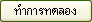

เมนูด้านข้าง
เมื่อต้องการกลับมาที่หน้าหลักเมนูหลักคลิ้กรูปด้านบนของเว็บได้ทุกๆ page

คลิ้กเพื่อเข้าสู่การทดลอง
คลิ้กเพื่อเข้าสู่ข้อมูลเกี่ยวกับการป้องกัน
| การใช้งาน
เมนู โดยการเลือกหัวข้อที่ต้องการจะทดลองและศึกษาจาก เมนูด้านข้าง เมื่อต้องการกลับมาที่หน้าหลักเมนูหลักคลิ้กรูปด้านบนของเว็บได้ทุกๆ page  คลิ้กเพื่อเข้าสู่การทดลอง คลิ้กเพื่อเข้าสู่ข้อมูลเกี่ยวกับการป้องกัน |